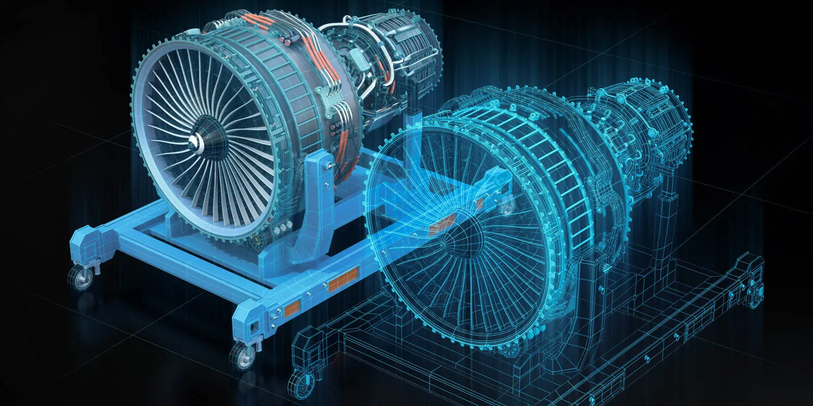
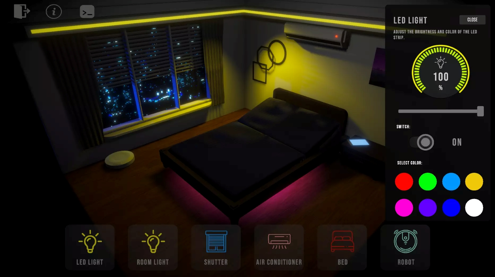

Industrial Software
Custom software for industrial applications, equipment and technically complex systems.
C · C# · .NET
Custom software solutions for industrial automation, IoT, smart buildings and Digital Twin applications.
I develop custom software solutions for systems where software meets the physical world.
My focus is on industrial software, IoT, automation, smart buildings and interactive Digital Twin applications.
With 10+ years of software development experience, I work primarily with C, C#, .NET and Unity to build reliable and practical solutions for technically complex environments.
The goal is simple: build software that connects systems, makes complex data understandable and creates real value for the people using it.
Custom software development focused on connected physical systems, automation and data-driven applications.
Custom software for industrial applications, equipment and technically complex systems.
Software for connected devices, data acquisition, communication and real-time data processing.

Interactive 3D visualization and Digital Twin applications for physical systems.
Software solutions for building automation, monitoring and connected environments.
A modern smart factory is more than a collection of automated machines. It is a connected ecosystem where sensors, controllers, industrial equipment and software continuously exchange data.
Software plays a central role in collecting, processing and visualizing this information. Data from machines can be used to monitor production, detect anomalies, track operational parameters and support better decision-making.
Depending on the environment, industrial systems may communicate through technologies and protocols such as Modbus, CAN bus, OPC UA or MQTT.
A Digital Twin is a software representation of a physical object, machine, system or environment that is connected to real-world data.
Instead of working with raw numbers and technical dashboards alone, a Digital Twin can provide an interactive visual representation of the physical system.
For example, an industrial machine can be represented as a 3D model where its current state, sensor values and operational parameters are visualized in real time.
Unity and C# can be used as the visualization layer for such systems, creating interactive 3D applications that make complex systems easier to understand and interact with.
Smart home and building automation systems connect lighting, heating, ventilation, climate control, security and other building systems into a unified environment.
The software layer can integrate data from sensors and controllers, process events and provide interfaces for monitoring and controlling the building.
In larger buildings, these systems can evolve into complex Building Management Systems (BMS), where hundreds or thousands of data points are monitored and controlled.
Software development can help bridge different systems, provide custom integrations and create new ways of visualizing and interacting with building data.

Industrial environments often contain equipment from different manufacturers and generations. Connecting these systems requires an understanding of the communication technologies used between devices, controllers and software systems.
Depending on the application, different protocols and technologies may be involved, including Modbus, CAN bus, OPC UA and MQTT.
Each technology serves a different purpose. Some are commonly used for direct device or controller communication, while others are better suited for higher-level data exchange and IoT architectures.
Understanding how these layers connect is essential when building reliable software for industrial and connected systems.
Early-stage hardware and software concepts can benefit from interactive prototypes that combine embedded firmware, software components and 3D visualization.
A prototype can be used to explore system behaviour, validate communication between components and demonstrate how physical devices interact with the surrounding software environment.
3D models and interactive visualizations can provide an additional layer during development, making system behaviour easier to understand before the final hardware and software solution is completed.
The approach can combine C and C# development with embedded firmware, communication interfaces, simulation and 3D-based system visualization.
Let's talk about your software challenge, technical problem or upcoming project.